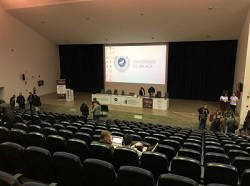

- 2020-06-30
-
MWSのプレミーティングがzoom上で開催されました。プレミーティングは以下の三部構成で行われました。
1.各会社が提供しているデータセットに関する説明
2.学会の開催方法の検討(「オンライン開催にするか現地開催にするか」など)
3.グループディスカッション (議題:コロナ禍の今・その後のICT環境)
グループディスカッション内では 「個人としては、テレワーク等の移行は困らなかった」といった意見が多く見られる一方で、 「ネット環境に不慣れな人」へのフォローが必要になっているといった意見もありました。 - 2020-06-30
-
5月30日にP講習発表会をオンラインで開催しました。
情報セキュリティ研究室では、研究室配属された3年生を対象として「P講習」というものを実施しています。P講習は、卒業研究を見越したプログラミングスキルの向上や研究室内でのコミュニケーション円滑化を目的とした学生主体の取り組みで、最終的にグループに分かれアプリケーション作成を行います。 毎年研究室の大学院1年生が企画しており、今年度は3年生を3名ずつ3班に分け「セキュリティに対して興味を持ってもらえる・危機感を感じてもらえるようなもの」というテーマでアプリケーション作成に取り組んでもらいました。
30日の成果発表会では現研究室メンバーだけでなくOBも参加し、技術的な話題から作成中の苦労話までバラエティに富んだ楽しい雰囲気の発表会となりました。 - 2020-05-02
-
東京電機大学は、日本の大学として初めて「Zoom」を全学導入した、という大学とのことなのです。そして、5月7日から、その「Zoom」を利用したオンライン授業が本格的に始まります。 その一方で、セキュリティの懸念事項なども指摘されていることから、情報セキュリティ研究室では、改めて「Zoomを用いたオンライン授業/オンライン会合を安全に進めるために」を自分たちでも確認することとし、資料としてまとめました。
Zoomを用いたオンライン授業/オンライン会合を安全に進めるために
それだけですと、後発組として貢献度も低いので、セキュリティとは直接関係ありませんが、代表的なオンライン会合ツールのスケジューリング機能についても、 参考情報として比較表にまとめてみました。資料をまとめるにあたりましては、関係各位の掲載情報を参照させて頂きました。 誤字脱字なども含め、記載事項に誤りがあれば、ご連絡ください。 - 2020-04-13
-
キャンパス入構禁止により、これまでのF2Fを中心とした研究室会合だけでは研究室としての活動を回せなくなってきている状況です。研究室活動も、変換点にあるのかもしれません。
4月3日、年度が変わって初の研究室全体会合では、Zoomを使ったオンライン会合を開催しました。せっかくの機会ですので、オンライン研究室会合を進めるにあたっての留意事項をチェックリストとしてまとめました。
- Zoomのソフトウェアや仕様のセキュリティ上の問題点への対応
- 最新版にアップデートしたZoomで参加すること
最新版にアップデートしたZoomを使用することは、参加にあたっての基本です。
- 最新版にアップデートしたZoomで参加すること
- Zoomを安全に使うためへの対応
- ミーティングURLは公の場に開示しないこと
ミーティングURLが知られると、 Zoomに限らず、知らない人がオンライン研究室会合に参加できてしまう可能性を高めます。Zoomの場合、ミーティングURL(パスワードを含まない)とパスワードを別々に取り扱うことは有効です。 - ミーティングパスワードを設定すること
「ミーティングパスワードを必要とする」をオンとしてください。メールアドレスで制限する方法もありますが、オンラインだからこそ、学外の方にも参加してもらう機会が増やせるという利点は活かしたいところです。
- ミーティングURLは公の場に開示しないこと
https://dendai.zoom.us/
Zoomを用いたオンライン講義を安全に進めるために
https://apps.adm.s.u-tokyo.ac.jp/WEB_info/p/pub/5756/Zoom.pdf
- Zoomのソフトウェアや仕様のセキュリティ上の問題点への対応
- 2020-04-08
-
4月3日、年度が変わって初の研究室全体会合が行われました。現在(4月3日～4月12日)、東京電機大学では、新型コロナウイルスの感染拡大防止のため、大学へ入構を禁止しています。今回、研究室全体会合としては初めての試みで、Zoomを使ったオンラインでの会合でした。
研究活動報告と研究室内の運営に関する状況報告だけではなく、就活に関する報告もありました。
オンライン会合を導入した良かったところとして「会合のためだけに研究室に行かなくても良い」という恩恵がありました。一方、不便に感じたところとして「複数の参加者が同時発言したときの聞き取りにくさ」がありました。これに対しては、チャット機能や手を挙げる機能等を利用することで解決ができるのではないかと思います。
以上のことから、今後入構が再開されても「オンラインでの全体会合」も選択肢の一つとして活用すべきではないかと思いました。
外出自粛要請に伴う各キャンパス入構禁止について（お知らせ）
https://www.dendai.ac.jp/news/20200402-02.html
- 2020-04-08
-
第182回DPS・第88回CSEC合同研究発表会が3月12日から3月13日の二日間、開催されました。ビデオ会議システムであるZoomを利用したオンライン会議形式での開催となり、初日に聴講者として参加しました。
第182回DPS・第88回CSEC合同研究発表会
主に仮想通貨・ブロックチェーンの分野を中心に聴講し、研究の動向を掴むことができました。途中、音声や映像のトラブルも発生しましたが、各セッションの座長のタイムマネジメントにより概ね時間通りに進行しました。 聴講内容とオンライン上での質疑応答に関して様々な気づきや学びがあり、今後の研究活動に活かしたいと思います。
https://www.ipsj.or.jp/kenkyukai/event/DPS182CSEC88.html
- 2020-04-03
-
3月17日、デジ特サイバーセキュリティ小委員会が開催され、鎌田敬介氏(一般社団法人金融ISAC 専務理事/CTO)と共に出席しました。この小委員において、「脆弱性対策データベースの役割 情報共有の視点から」というタイトルで、国内の脆弱性対策データベースJVN(Japan Vulnerability Notes)の取組みを紹介しました。鎌田氏は、「我が国の金融業界における共助の仕組み」というタイトルで、金融ISACでの人材育成の取組みなどを紹介しました。
デジ特サイバーセキュリティ小委員会(小林史明小委員長)を開催。 https://go2senkyo.com/seijika/122149/posts/121195
デジタル社会推進特別委員会(略称：デジ特) https://hiratakuchan0125.hatenablog.com/entry/2019/10/07/173508
- 2020-04-03
-
3月3日～5日、米国MITREが主催するSCAP(Security Content Automation Protocol; セキュリティ設定共通化手順) V2 Workshopがメリーランド州アナポリス ジャンクションにて開催されました。
SCAPは、米国連邦政府が2006年頃から開始した脆弱性対策作業などの情報セキュリティにかかわる技術面での自動化と標準化を目指した取り組みです。SCAP V1は、プログラムの脆弱性を一意に識別するCVE(Common Vulnerabilities and Exposures；共通脆弱性識別子)、脆弱性の深刻度を評価するCVSS(Common Vulnerability Scoring System；共通脆弱性評価システム)などの識別子や評価指標の共通化の普及に大きな役割を果たしました。SCAP V2では、 エンドポイントのハードウェア/ソフトウェア資産管理、脆弱性管理、設定管理のためのアーキテクチャ、インターフェース、データモデル、プロトコルの仕様開発を進めています。
メリーランド州アナポリス ジャンクション(米国)について
アナポリス ジャンクションは、ボルチモアとワシントンDCの間くらいに位置します。 日本時間との時差はJST-13時間です。ワークショップ開催場所の近くには、国家安全保障局(NSA)、国立暗号博物館(左写真：暗号機 Enigma、 右写真：エニグマ解読用計算機 U.S.Navy Cryptanalytic Bombe)があります。
Security Content Automation Protocol Version 2 (SCAP v2)
https://csrc.nist.gov/Projects/Security-Content-Automation-Protocol-v2
National Cryptologic Museum
https://www.nsa.gov/about/cryptologic-heritage/museum/
- 2020-03-06
-
2月15日、修士論文の学内パネル展示が開催されました。今年はWeb工学研究室（増田研）、実空間コンピューティング研究室（岩井研）との合わせて3つの研究室と同部屋でのパネル展示を行いました。 私達、情報セキュリティ研究室（寺田研）からは、修士2年の5名による研究を展示しました。
当日は、展示見学者の方々に対して、各々が自身の研究をポスターにまとめたものをわかりやすく説明しました。他の研究室や後輩の他に、弊研究室のOBの方々にも来て頂きました。 また、自身の休憩時間などに普段関わることのない他学科の研究室の研究を見て回る機会があり、全く別の分野の修士の研究では、どのような研究内容なのかや成果などを詳しく聞くことができました。
- 2020-03-06
-
2月13日、卒業論文発表会が開催されました。昨年度に引き続き、先端情報システム研究室、暗号方式・暗号プロトコル研究室との3研究室合同での開催となりました。 情報セキュリティ研究室からは学部4年の8名が、各々1年間に渡って取り組んできた卒業研究について発表を行いました。
これまで、自らの研究内容について研究室外にて発表する機会が少なかったため、今回の発表会は1年間の集大成として有意義な経験となりました。 発表では多様な意見やアイデアのフィードバックを頂くことができ、多くの人とコラボレーションすることの大切さを改めて感じた1日でした。 今回の経験を、今後の研究活動や就職後の業務に還元していきたいと思います。
- 2020-03-06
-
2月7日、修士論文発表会が開催されました。発表会は、同じ未来科学研究科情報メディア学専攻の研究室と合同で行われ、各人がこれまでに行ってきた研究成果の発表をします。 今年は、実空間コンピューティング研究室(岩井研)、Web工学研究室(増田研)、計算言語学研究室(大野研)との合同で開催されました。
発表では、如何に同じ専攻の研究室とはいっても、分野の違う人達に対する発表は普段の研究室会合での研究メモ発表などと違い、 自分達が当たり前だと分かっていることでも相手には伝わっていないことがあり、質問をされることがありました。 発表資料作りの際に、相手の理解度に合わせて単語や仕組みの説明を挟んだ資料作りをすることが大切だと学ぶことができました。
- 2020-03-02
-
2月24日から27日にかけて開催された6th International Conference on Information System Security and Privac (ICISSP2020)で発表してきました。今回の国際会議は、 MODELSWARD 2020,VISGRAPP 2020, SENSORNETS 2020, PHOTOPTICS 2020, BIOSTEC 2020, ICAART 2020, ICPRAM 2020, ICORES 2020との合同開催でした。
国際会議では、IoT、暗号、人工知能、BlockChain、クラウドコンピューティング、マルウェア検知などのテーマに関する論文が発表されました。 初めての国際会議参加で緊張しましたが、ポスターセッションでは、自分の研究内容をスムーズに説明できました。また、研究者たちからいろいろな貴重なアドバイスをもらい、 今後研究を進める上で大いに参考になりました。ほかの発表者(regular papers)の発表を聴講することで、英語でのプレゼンテーションなど勉強の機会となりました。
マルタについて
マルタ共和国は、南ヨーロッパの共和制国家で、イタリアのシチリア島の南に位置します。日本時間との時差はJST-8時間です。 マルタは古代から非常に重要な要塞でした。また，マルタ騎士団の地としても有名です。
- 2020-02-08
-
1月29日～31日、国際的なCSIRTのコミュニティであるFIRSTの技術会合(Technical Colloquium)がマラガ(スペイン)のマラガ大学にて開催されました。今回の技術会合は、 ヨーロッパ地区のCSIRTコミュニティであるTF-CSIRT(Task Force on Computer Security Incident Response Teams)との合同開催でした。

技術会合では、セキュリティとコンプライアンス文化を醸成するためのユーザの意識モデルやセキュリティ組織のShadowserver Foundationでの観測活動などが報告されました。
マラガ(スペイン)について
マラガはスペイン南部に位置する都市で、日本時間との時差はJST -8時間です。巨匠・ピカソを輩出した地で、小高い丘の上にはヒブラルファル城があります。
- 2020-02-07
-
1月28日から31日にかけて開催されたSCIS2020に1人で参加&発表してきました。
初上陸の高知では、カツオのたたきや鍋焼きラーメンなどの高知料理を堪能できました。滞在ホテル近くのひろめ市場には何度もお世話になりました。
初めての学会発表で緊張しつつも、発表本番は練習以上にスムーズに発表できて一安心しました。聴講者からの質問やコメントは、研究室内からは出てこないものばかりで、今後研究を進める上で大いに参考になりそうです。 ブロックチェーンやファジングの発表を中心に聴講し、発表の進め方や研究の着眼点など、学ぶことが多かったです。

- 2019-12-25
-
12月23日(月)、TDU-CSIRT支援の下、CSCW(クリスマスセキュリティワークショップ)2019を開催しました。CSCWは、サイバー攻撃誘引基盤"STARDUST"を活用したサイバー攻撃対策を検討するだけではなく、連携を含めた形で活動を広げていくためのワークショップです。 初回の2018年は、STARDUSTの機能紹介ならびに活用事例の紹介を主体に構成しました。2019年は、前半：私が考えるサイバーセキュリティ20年、後半："STARDUST"とOSINTとの連携の可能性の2部構成にしました。
特に、私が考えるサイバーセキュリティ20年は、(1)サイバーセキュリティを過去、現在、未来という形で時間軸での流れを見ていく場合、その視点は様々であること、(2)過去の経験を次世代に伝える手段として、サイバーセキュリティの時間軸での捉え方の違いや、その語りを通して経験値を伝えていくことを意図しています。
- 2019-12-21
-
12月20日、セキュリティワークショップSecurityDay 2019が熱海で開催されました。温泉で有名な場所で開催されることから、温泉セキュリティワークショップとしても知られています。 このワークショップは、日本インターネットプロバイダー協会(JAIPA)が中心となって構成するSecurityDay運営委員会によって開催されています。
- 2019-12-21
-
12月17日～18日、アセアン各国のISPが集うワークショップ(ASEAN-JAPAN Information Security Workshop for ISPs)がバンコク(タイ)にて開催されました。今年は、タイ政府系機関であるETDA(Electronic Transactions Development Agency)がローカルホストを務めました。このワークショップは、アセアン各国のISPの抱える課題や取組みに関する意見交換の場として、総務省サポートの下、ICT-ISAC Japanが企画している会合です。
バンコク(タイ)について
バンコクはタイの首都で、日本時間との時差はJST -2時間です。
- 2019-12-21
-
12月1日～2日、国際的なCSIRTのコミュニティであるFIRSTの技術会合(Technical Colloquium)がドーハ(カタール)にて開催されました。技術会合は、FIRSTに加盟するCSIRTチームが主催する地域向けの会合で、年間10回ほど開催しています。今回の技術会合は、"Defending the Nation – Know Your Adversary"というテーマで、Qatar CERT (Q-CERT)が主催しました。また、技術会合に引き続き、第7回サイバー演習 Qatar National Cybersecurity Drill (Star 7)が開催されました。
技術会合では、サイバー攻撃活動のステップ、AIやドローンなど今後注目していく必要のあるトピックについての発表がありました。日本からは、Security Efforts Undertaken as a Result of Lessons Learned from the WannaCry Incidentというタイトルで、WannaCryから学んだことを紹介しました。
ドーハ(カタール)について
ドーハはカタールの首都で、日本時間との時差はJST -6時間です。市街には、デザインされた高層ビルが立ち並んでいます。

https://www.first.org/events/colloquia/doha2019/
https://www.qcert.org/
https://www.motc.gov.qa/en/news-events/news/ministry-organizes-%E2%80%9Cfirst-qatar-tc-2019%E2%80%9D-workshop
https://www.motc.gov.qa/en/news-events/news/motc%E2%80%99s-7th-national-cybersecurity-drill-%E2%80%9Cstar-7%E2%80%9D-begins
- 2019-12-21
-
10月29日～31日、国際的なCSIRTのコミュニティであるFIRSTのシンポジウムがマスカット(オマーン)にて開催されました。シンポジウムは、FIRSTが主催する地域向けの会合で、年間5回ほど開催しています。今回は、アフリカとアラブ地域向けのシンポジウムで、ITU-ARCC(ITU Arab Regional Cyber Security Center)との共催となります。また、シンポジウムは、Regional Cybersecurity Week 2019という期間イベントの一環としても開催され、このイベント期間中には、第8回 サイバーセキュリティサミット (10月27日～28日)、イスラム諸国のCSIRTのコミュニティであるOIC-CERT(Computer Emergency Response Team for Organisation of Islamic Cooperation)の第11回年次総会 (10月29日)、第7回 サイバー演習 (10月30日～31日)も開催されました。
シンポジウムのトピックは、第四次産業革命(Fourth Industrial Revolution、4IR)におけるサイバーセキュリティという視点で、CSIRT、AI、IoTなどに関する発表やパネルディスカッションが行われました。日本からは、How can we strengthen regional CSIRT community to solve your problems ?というタイトルで、日本のCSIRTコミュニティである日本シーサート協議会の活動を紹介しました。
マスカット(オマーン)について
マスカットはオマーンの首都で、日本時間との時差はJST -5時間です。オマーン最大のスルターンカブースグランドモスクがあります。
https://www.first.org/events/symposium/muscat2019/
https://twitter.com/hashtag/cybersecurity_week_2019
- 2019-12-21
-
12月18日(水)、2019年後期授業「クラウドコンピューティング」において、外部講師としてお招きした(一社)日本クラウドセキュリティアライアンス／ネットワンシステムズ(株)の片岡武義(かたおかたけよし)氏による講義「ネットワーク仮想化」を実施しました。 講義では、ネットワーク機能をソフトウェアで再定義するSDN：Software Defined Network、ネットワーク要素を仮想化インフラで再定義するNFV：Network Functions Virtualizationなどを取り上げました。理解を深めるため、トピックが終わる度に、簡単な確認テストを実施しました。

https://www.dendai.ac.jp/about/campuslife/syllabus/syllabus/tokyo_senju.html
https://www.cloudsecurityalliance.jp/site
https://www.netone.co.jp/ - 2019-12-15
-
12月11日、2019年後期授業「クラウドコンピューティング」において、外部講師としてお招きした(一社)日本クラウドセキュリティアライアンス／マクニカソリューションズ(株)の野原峰彦(のはらみねひこ)氏による講義「コンテナ型仮想化」を実施しました。 講義は、前半が座学で、コンテナの歴史と技術概要や利用事例の紹介です。後半は演習で、コンテナ技術のひとつであるDockerを使って、アプリケーションの配備やDockerイメージの作成を通して、コンテナ型仮想化を体験しました。
https://www.dendai.ac.jp/about/campuslife/syllabus/syllabus/tokyo_senju.html
https://www.cloudsecurityalliance.jp/site
https://www.macnica.net/msc/ - 2019-12-10
-
12月9日、10月に開催されたMWS2019のポストミーティングに参加しました。 ポストミーティングでは、MWSCup2019の事前課題と当日課題の作問者から作問意図と課題について解説が行われました。 解説内には"TDU-ISL"がMWSCup終了後の懇親会で行った質問への回答も含まれており、新たな知見を獲得することができました。 今回得られた知見を研究室内で共有し、来年に向けて取り組んでいきます。

- 2019-12-10
-
12月4日、2019年後期授業「クラウドコンピューティング」において、外部講師としてお招きした(一社)日本クラウドセキュリティアライアンス／(株)日立製作所の甲斐賢(かいさとし)氏による講義「サーバ仮想化」を実施しました。 講義では、クラウドにおけるサーバ管理について、誰がクラウドのサーバを管理するか、どのようにサーバを管理するかという視点から解説した後、グループディスカッションによる「管理とは何かを話し合おう」を行いました。

https://www.dendai.ac.jp/about/campuslife/syllabus/syllabus/tokyo_senju.html
https://www.cloudsecurityalliance.jp/site
https://www.hitachi.co.jp/ - 2019-11-27
-
11月27日、2019年後期授業「クラウドコンピューティング」において、外部講師としてお招きした(一社)日本クラウドセキュリティアライアンス／(社)インフォセックの満田淳(みつたあつし)氏による講義「クラウドセキュリティの技術的情報」を実施しました。 講義では、クラウドセキュリティ要件について解説した後、グループディスカッションによる「クラウドサービス選定のためのチェックリストを用いたセキュリティ要件の洗い出し」を行いました。
https://www.dendai.ac.jp/about/campuslife/syllabus/syllabus/tokyo_senju.html
https://www.cloudsecurityalliance.jp/site
https://www.infosec.co.jp/ - 2019-11-26
-
11月20日、2019年後期授業「クラウドコンピューティング」において、外部講師としてお招きした(一社)日本クラウドセキュリティアライアンスの勝見勉(かつみべん)氏による講義「クラウドのセキュリティ課題概観」を実施しました。 情報セキュリティ研究室では、インターネットでの「クラウド」普及と共に、クラウドセキュリティへのニーズが高まると考え、産学連携によるクラウドセキュリティ普及促進に取り組み始めました。

https://www.dendai.ac.jp/about/campuslife/syllabus/syllabus/tokyo_senju.html
https://www.cloudsecurityalliance.jp/site - 2019-11-11
-
10月29日にCSS内で開催されたMWSCup2019に"TDU-ISL"として参加しました。
今年は事前課題、当日課題3つ(動的解析&DFIR, 静的解析, 表層解析)の計4つの課題の合計点を競いました。
事前課題
事前課題はMWSに貢献できるアプリケーションやデータセットの作成でした。 我々はCuckoo Sandboxというマルウェア動的解析環境の自動ビルドスクリプトを作成しました。他チームと比較するとインパクトに欠ける作品でしたが、需要が高いことや評価実験をプレゼンテーションに加えたことで高評価を頂けました。 去年は2,3週間前に慌てて成果物作成に取りかかりましたが、今年は数ヶ月前から計画的に取りかかれたので、精神的にも肉体的にも余裕のあるプロジェクトでした。
当日課題
当日課題も去年より早めに勉強を行うことで、取れる問題は確実に取れるようになりました。また、連携を意識してプレイするなど去年よりもチームとして大きく成長できたように思います。 逆に去年と問題傾向が大きく変わった問題は練習の成果が点数に結びつかずに悔しい結果となりました。問題によらず応用の効く解析の素養を身に付けるという新たな反省点が見つかりました
結果
大会結果は15チーム中8位でした。去年よりも順位を上げることができましたが、まだまだ伸び代が十分にあるので来年が楽しみです。
参考
cuckoo-vm: https://github.com/tdu-isl/cuckoo-vm

- 2019-07-01
-
6月16日から21日にスコットランドのエディンバラで開催された国際的なCSIRTのコミュニティであるFIRSTの第31回年次総会（FIRSTConference）にて、10人の理事のうち半数が改選されました。 この選挙で、新たな理事の一人として、情報メディア学科の寺田真敏教授が選ばれました。FIRSTの理事は10名(任期2年)で毎年半数が入れ替わります。 今年の年次総会には、80ヶ国、約1100名のCSIRT関係者が集いました。また、2年後の第33回年次総会(2021年6月)は福岡で開催されることがアナウンスされました。
- 2019-04-08
-
情報セキュリティ研究室は平成31年4月より寺田 真敏教授を中心とした体制に移行いたしました。
- 2019-03-31
-
猪俣教授が平成31年3月をもって東京電機大学未来科学部を退職されることとなりました。 情報セキュリティ研究室の後任として平成31年4月より寺田 真敏教授が着任されます。
- 2019-03-29
-
3月25日、総合研究所 佐々木良一特命教授が大分市で行われた、県医療ロボット・機器産業協議会のセミナーで講演しました。 佐々木教授は「医療用IoTのセキュリティーとリモートメンテナンス」と題して、多様化するサイバー攻撃の現状や、医療現場のIoTの導入、セキュリティー対策について解説しました。
媒体：大分合同新聞 3月26日 朝刊
タイトル：サイバー攻撃の現状と対策説明 大分市でセミナー - 2019-02-27
-
総務省では、公衆無線LANの利用者のセキュリティ対策に関する啓発を図ることを目的として、オンライン講座「これだけは知っておきたい公衆無線LANセキュリティ対策」を2月27日から開講しました。 この講座の講師を、未来科学部 情報メディア学科の猪俣敦夫教授が務めています。 全8回の講義動画のうち、公衆無線LANを利用する際のリスクの事例を紹介する第1回～第4回を担当しています。
開講期間：平成31年2月27日から3月29日まで
講座概要：全8回構成、公衆無線LANを利用する際のリスクを事例を通じて紹介するとともに、適切なセキュリティ対策の方法をわかりやすく紹介
配信方式：株式会社ドコモgaccoが運営する大規模公開オンライン講座プラットフォーム「gacco」にて配信 - 2018-12-12
-
本年3月に本学情報メディア学専攻修士課程を修了した松高直輝さんが、NPO法人デジタル・フォレンジック研究会より、情報処理学会論文「シャドウコピーを利用したファイル管理システムの提案と評価」で デジタル・フォレンジック若手研究者優秀賞に選定され、12月12日に行われたデジタル・フォレンジックコミュニティ2018において表彰状を授与されました。
受賞論文名:シャドウコピーを利用したファイル管理システムの提案と評価 - 2018-11-20
-
パスワード管理で注意しなければいけない点などについて専門家としてインタビューに答えました。
媒体：日本経済新聞 11月20日 夕刊
タイトル：ニュースぷらす Bizワザ 「秘密の質問」は要注意 - 2018-11-09
-
10月3日、未来科学部 情報メディア学科の猪俣敦夫教授（情報セキュリティ研究室）が、足立区情報公開・個人情報保護審議会委員に就任しました。 期間は2020年6月30日までとなります。
- 2018-11-07
-
卒業生 久保駿介さん、杉本大輔さんの学生時代の研究論文が「日本セキュリティ・マネジメント学会」2017年度論文賞を受賞しました。 表彰式は、11月3日工学院大学で開催された日本セキュリティ・マネジメント学会 第31回学術講演会にて行なわれました。
受賞論文名:パスワード再発行方式の安全評価と最適な利用法の提案 - 2018-10-22
-
7月4日から6日に福井県で開催された、情報処理学会他が主催する「マルチメディア、分散、協調とモバイル(DICOMO2018)シンポジウム」において、 情報メディア学専攻の早川拓郎さんがヤングリサーチャー賞を受賞しました。
受賞論文名:IoTを含む医療機器システムのセキュリティ/セーフティ評価手法の提案と適用
- 2018-10-12
-
情報メディア学科 猪俣敦夫教授が、EnterpriseZine（EZ）が提供する企業セキュリティ専門メディア「Security Online」に掲載されました。 9月13日に行われた年次カンファレンス「Security Online Day 2018」での登壇の様子がレポートされています。
媒体：翔泳社 EnterpriseZine（EZ）「Security Online」
タイトル：「惑わされないセキュリティ人材育成」をやってみよう 教育現場からのアドバイス - 2018-08-29
-
8月24日、総合研究所 佐々木良一特命教授がNHK「ニュースウオッチ9」に出演しました。 コンサートなどのチケットが「ボット（bot）」と呼ばれる自動プログラムで大量に注文される問題について、情報セキュリティの専門家としてコメントしました。
媒体：日本経済新聞 11月20日 夕刊
タイトル：ニュースぷらす Bizワザ 「秘密の質問」は要注意 - 2018-07-18
-
総合研究所 佐々木良一特命教授が、(ISC)² （アイ・エス・シー・スクエア）が主催する第12回年次アジア・パシフィック情報セキュリティー・リーダーシップ・アチーブメントプログラム (Information Security Leadership Achievements Asia-Pacific program)で受賞、佐々木教授のアジア太平洋地区における情報セキュリティに関する卓越したリーダシップが認められ、 情報セキュリティ教育者(Information Security Educator)部門のThe 2018 Showcased Honoreeに選定されました。表彰式は、7月9日香港のコンラッドホテルにて開催されました。
受賞名：(ISC)²Information Security Leadership Achievements Asia-Pacific program The 2018 Showcased Honoree for Information Security Educator
- 2018-04-27
- 2018-03-28
-
情報メディア学科の柿崎淑郎助教が、情報処理学会 情報処理教育委員会 情報システム教育委員会が主催する「第10回情報システム教育コンテスト(ISECON2017)」にて優秀賞を受賞しました。 この受賞は、教育改善推進室によるPBL科目支援により開講した未来科学部情報メディア学科の科目「サーバプログラミング演習」の取り組みの成果となります。 本科目では通信ネットワーク上での情報システムについての基本開発技術を学びます。より実践に近い環境で学ぶことのできるよう、仮想サーバ上でプログラミングを学べる環境が用意された授業となっています。 学生からの評価も高く、教育内容の質の高さが評価され今回の受賞となりました。
受賞名：第10回情報システム教育コンテスト(ISECON2017) 優秀賞
受賞題目：システム開発プロセスの実践的学修 - 2018-03-05
-
情報メディア学科の猪俣敦夫教授は足立区の情報公開・個人情報保護審議委員を務めています。 今年も足立区役所全職員、約1000名を対象とした研修会に際し、猪俣教授が4回に分けて講習を行いました。
- 2018-02-22
-
この検討会は、国民がインターネットを安心して利用できるよう、インターネットの障害を防ぐための方策を検討を行うため立ち上げられ、10月26日に第一回目の会合が開催されました。 同検討会において、「円滑なインターネット利用環境の確保に関する検討会 対応の方向性」が取りまとめられ、意見募集の結果と合わせ公表されました。 佐々木教授は、内閣官房サイバーセキュリティ補佐官や総務省のセキュリティに関する検討会の座長を歴任しており、セキュリティ分野に深い知見を持っているとして座長に選出されています。
「円滑なインターネット利用環境の確保に関する検討会 対応の方向性」及び意見募集結果の公表
2020 News
📝6月の研究室活動報告：MWSプレミーティングへの参加(2020/06/08)
📝5月の研究室活動報告：P講習報告会(2020/05/30)
📝4月の研究室活動報告：Zoomを用いたオンライン授業/オンライン会合を安全に進めるために
📝4月の研究室活動報告：オンライン研究室会合のすゝめ ～Zoom利用ガイド事前準備編～
📝4月の研究室活動報告：情報セキュリティ研究室全体会合(2020/04/03)
📝3月の研究室活動報告：第182回DPS・第88回CSEC合同研究発表会への参加
📝3月の研究室活動報告：デジ特サイバーセキュリティ小委員会への出席
📌活動紹介：March 3-5 SCAP V2 Workshop
📝2月の研究室活動報告：学内パネル展示
📝2月の研究室活動報告：卒業論文発表会
📝2月の研究室活動報告：修士論文発表会
📝2月の研究室活動報告：ICISSP(マルタ)への参加&発表
📌活動紹介：TF-CSIRT meeting & FIRST Regional Symposium Europe
📝1月の研究室活動報告：SCIS2020(高知)への参加&発表
2019 News
📌活動紹介：CSCW (クリスマスセキュリティワークショップ) 2019
📌活動紹介：SecurityDay 2019 in 熱海
📌活動紹介：The 10th ASEAN-JAPAN Information Security Workshop for ISPs
📌活動紹介：Doha 2019 FIRST Technical Colloquium
📌活動紹介：2019 FIRST & ITU-ARCC Regional Symposium for Africa and Arab Regions
📝12月の研究室活動報告：(一社)日本クラウドセキュリティアライアンスの片岡武義氏による講義を実施
📝12月の研究室活動報告：(一社)日本クラウドセキュリティアライアンスの野原峰彦氏による講義を実施
📝12月の研究室活動報告：MWS2019 ポストミーティングへの参加
📝12月の研究室活動報告：(一社)日本クラウドセキュリティアライアンスの甲斐賢氏による講義を実施
📝11月の研究室活動報告：(一社)日本クラウドセキュリティアライアンスの満田淳氏による講義を実施
📝11月の研究室活動報告：(一社)日本クラウドセキュリティアライアンスの勝見勉氏による講義を実施
📝10月の研究室活動報告：MWSCup2019への参加
🎉寺田教授が国際的なCSIRTのコミュニティであるFIRSTの理事に就任
📌情報セキュリティ研究室の体制変更のお知らせ
📌猪俣教授が平成31年3月をもって東京電機大学未来科学部を退職されます
🎉総合研究所 佐々木特命教授が大分市で講演
🎉情報メディア学科 猪俣教授が、総務省オンライン講座に協力
2018 News
🎉卒業生 松高さんの論文が「デジタル・フォレンジック若手研究者優秀賞」を受賞
🎉総合研究所 佐々木良一特命教授が「日本経済新聞」に掲載されました。
🎉情報メディア学科 猪俣教授が、足立区情報公開・個人情報保護審議会委員に就任
🎉卒業生 久保さん、杉本さんの学生時代の研究論文が「日本セキュリティ・マネジメント学会」2017年度論文賞を受賞
🎉情報メディア学専攻 早川さんが「DICOMO2018」で受賞
🎉情報メディア学科 猪俣教授が「Security Online」に掲載
🎉総合研究所 佐々木特命教授がNHK「ニュースウオッチ9」に出演
🎉総合研究所 佐々木特命教授が2018年アジア・パシフィックISLAを受賞
📌佐々木教授退任記念誌の公開

🎉情報メディア学科 柿崎助教が「ISECON2017」で受賞
🎉情報メディア学科 猪俣教授が足立区役所職員を対象とした講習会を担当
🎉総務省主催「円滑なインターネット利用環境の確保に関する検討会」の募集結果が公表